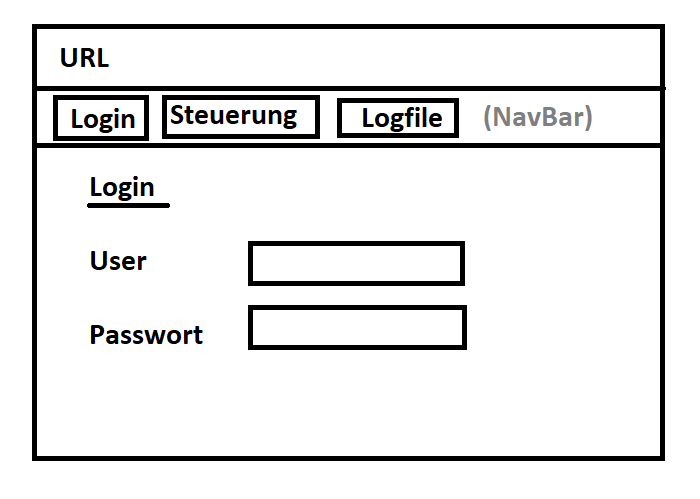
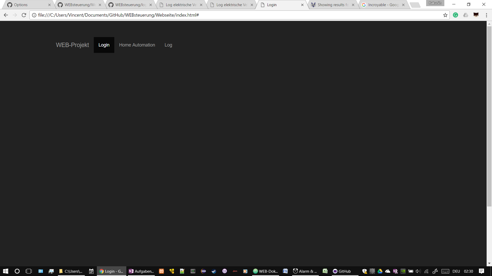

Website mit drei Seiten:
Workshop UX Design in der Gruppe durchgeführt und auf eine Design Variante geeinigt.
Skizzen der Seiten 1-3

Login Seite mit Benuzter Authentifizerung. Um die Komplexität zu reduzieren wird die Benutzerauthentifizeirung nur lokal vorgenommen und nicht via Facebook-Account oder eigener Account-Management Lösung realisiert.
Da wir JavaScript etwas angeschaut haben Benutzen wir JavaScript Befehle um vom Benutzer den Namen und ein Passwort abzufragen. Diese Daten speichern wir dann nur für die Benutzung im Log Seite 3.
Das Journal wird durch die Git Commits geführt. Das bedeutet die Kommentare sollen
entsprechend genügend Informationen enthalten.
Link zu den Git Commits
| Ordner | Unterordner | Dateien | Beschreibung |
|---|---|---|---|
| //Webverzeichnis | /images | .jpg, usw. | Ablage aller Bilder welche verwendet werden. |
| //Webverzeichnis | /styles | .css | Stylesheets zur Formatierung der Seiten werden hier abgelegt. |
| //Webverzeichnis | .html, usw. | Die hmtl Dateien, sprich die Seiten werden direkt im
Webverzeichnis abgelegt. Best Practice? Ein Ordner für html im //Webverzeichnis? |
ressource fürs nachschlagen von vue: http://vuejs.org/v2/guide/
Hier muss noch Text rein!!
schön wäre noch local storage zu benutzen mit JSON.stringify('JS-Object') zum umwandeln von JavaScript-Objekt zu einem String JSON.parse(localStorage.item) zum umwandeln eines Item's zurück zu einem JavaScript-Objekt
Bsp. der verwendeten Basisbootstrap Konfiguration in Aktion.
Folge diesem Link: https://i20100.github.io/WEBsteuerung/Tests/navbar.html
Mehr oder weniger konnte dafür das template von
hier
verwendet werden.
Für die Seiten Home Automation und Logfile liess sich das Template verwenden.
Bei der Seite Log welche als erste Seite aufgerufen werden soll und als
Login-Seite dient, liess sich das Bootstraptemplate nicht implementieren ohne
das der JavaScript Code nicht mehr ausgeführt wird.
